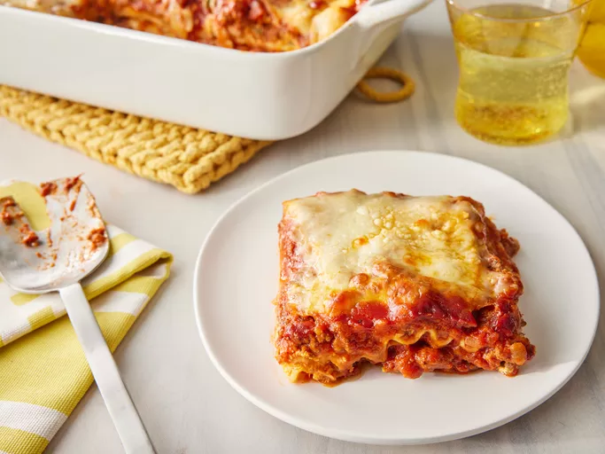

Lasagna

Description
Prep Time:
30 mins
Cook Time:
2 hrs 30 mins
Additional Time:
15 mins
Total Time:
3 hrs 15 mins
Servings:
12
Making lasagna can be time-consuming, but the results are well worth the wait.
You'll find a detailed ingredient list and step-by-step instructions in the recipe below,
but let's go over the basics:
Ingredients
1 pound sweet Italian sausage
¾ pound lean ground beef
½ cup minced onion
2 cloves garlic, crushed
1 (28 ounce) can crushed tomatoes
2 (6.5 ounce) cans canned tomato sauce
2 (6 ounce) cans tomato paste
2 tablespoons white sugar
4 tablespoons chopped fresh parsley, divided
1 ½ teaspoons dried basil leaves
1 ½ teaspoons salt, divided, or to taste
1 teaspoon Italian seasoning
½ teaspoon fennel seeds
¼ teaspoon ground black pepper
16 ounces ricotta cheese
1 egg
¾ pound mozzarella cheese, sliced
¾ cup grated Parmesan cheese
Steps
- Gather all your ingredients.
- Cook sausage, ground beef, onion, and garlic in a Dutch oven over medium heat
until well browned.
- Stir in crushed tomatoes, tomato sauce, tomato paste, and water. Season with
sugar, 2 tablespoons parsley, basil, 1 teaspoon salt, Italian seasoning, fennel
seeds, and pepper.
Simmer, covered, for about 1 ½ hours, stirring occasionally.
- Bring a large pot of lightly salted water to a boil. Cook lasagna noodles in boiling
water for 8 to 10 minutes. Drain noodles, and rinse with cold water.
- In a mixing bowl, combine ricotta cheese with egg, remaining 2 tablespoons
parsley, and 1/2 teaspoon
salt.
- Preheat the oven to 375 degrees F (190 degrees C).
- To assemble, spread 1 ½ cups of meat sauce in the bottom of a 9x13-inch baking
dish. Arrange 6 noodles lengthwise over meat sauce, overlapping slightly.
Spread with 1/2 of the ricotta cheese mixture. Top with 1/3 of the mozzarella
cheese slices. Spoon 1 ½ cups meat sauce over mozzarella, and sprinkle with
1/4 cup Parmesan cheese.
- Repeat layers, and top with remaining mozzarella and Parmesan cheese. Cover
with foil: to prevent sticking, either spray foil with cooking spray or make sure
the foil does not touch the cheese.
- Bake in the preheated oven for 25 minutes. Remove the foil and bake for an
additional 25 minutes.
- Rest lasagna for 15 minutes before serving.